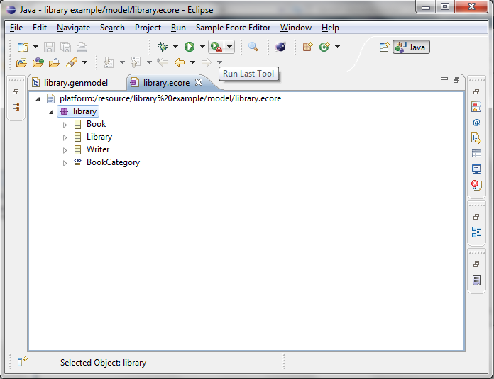

In the previous tutorial, you would have learned how to setup the Eclipse development environment for ECP. We also learnt how to import a project into the workspace using the Library tutorial and learnt how to run the ECP project.
In this tutorial we will learn about the various components of the EMFCP.
Let us consider the same library example we used in the previous tutorial.

NavigatorThe navigator is leftmost pane as shown in the below screenshot.
You can create a new project by right-clicking and selecting Other...->New Project... and give a project name.Now you can add various components to the project by right-clicking on the project and select New Model Element. This brings up a dialog where you can choose the model element. Note that you can also type in the name of the model in the Search textbox to filter out the results
EditorLet us add the Book element for example and the when you do so, you get the Editor component where you can change the values. The editor is persistent as well, which means that when you type a name for the book, it gets persisted automatically.
Now let us add a Library element to the project and when you right click on the added library element, you can see the various options like New Book and New Writer which are the "Containment" features (Book and Writer elements are contained in the Library elements)
DialogsThe EMF Client Platform offers a lot of dialogs and let us look at some of them below. Let us add a new Writer element to the project as shown below
Now let us link the Writer we created to the Book element. To do this, click on the Link Author button corresponding to the author element in the Book.
This will pop-up a dialog where you can select which writer to link the book to. You can use the search box to search for the element
Select the Writer and click on Ok and you will see in the Book editor that the selected writer is "linked"
There is also a Search model element feature. In the navigator click on the Search button highlighted in the below screenshot. and it pops-up a dialog where you can search through the created model elements in the project
Share ProjectFinally you can share the project to the server which will check-in the project into the EMF Store repository. Right-Click on the project and select Share Project
Now, a dialog pops-up asking to select the user session. Select the session and your project will be committed to the repository.
You can cross verify this by opening the EMFStore View, login into the server and then expanding the directory tree.